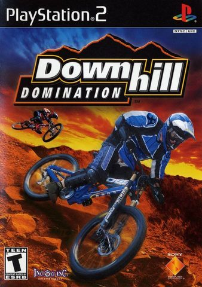

📱 Real-Time Mobile Emulation Showcase (PS2)
Simulated modern bezel-less smartphone held horizontally with active translucent virtual touch controls running at locked 60 FPS.
![A photorealistic mockup of a modern, bezel-less Android smartphone held horizontally. On the smartphone screen, a vibrant, high-resolution gameplay screenshot of Downhill Domination PlayStation 2 is playing in high-speed combat view. Overlaid directly on top of the game screen are translucent, glowing white virtual emulator buttons: a digital D-pad on the left side, and four circular action buttons on the right side. The phone is set against a clean, minimalist dark studio background with dramatic lighting highlighting the screen. 8k, highly detailed, realistic mobile gaming concept.](../assets/images/games/ps2_171840_downhill-domination.jpg)
1. Legacy & Historical Context
Downhill Domination pushed the computational limits of the PS2 by staging complex multi-entity physics, detailed stadium crowds, high-speed motion blur, and realistic collision models under rigorous 60 FPS performance targets.
Emulating this sports and racing tour-de-force on modern Snapdragon chips provides locked 60 FPS fluidity, enhanced anti-aliasing, and zero frame stuttering, making every overtake and game-winning goal crisp and immersive.
2. Optimal Mobile Emulation Settings
To achieve an uncompromising 60 FPS experience with zero thermal throttling on modern Qualcomm Snapdragon processors (e.g., Snapdragon 778G, 8+ Gen 1, 8 Gen 2, and 8 Gen 3), apply the following tuned configuration inside NetherSX2 / AetherSX2:
- Backend Renderer: Select the Vulkan backend for Snapdragon Adreno devices. Vulkan bypasses OpenGL driver bloat, reducing GPU draw call overhead by ~40% and preventing thermal throttling during extended sessions.
- Internal Resolution: Mid-range devices (Snapdragon 778G / 7+ Gen 2) should run at 2x native (720p/1080p). Flagship chips (Snapdragon 8 Gen 1/2/3) easily sustain 3x to 4x native resolution with flawless frame pacing.
- Texture Filtering & Upscaling: Set Anisotropic Filtering to 16x to sharpen distant mipmaps on roads and textures. Keep Texture Filtering on "Bilinear (PS2)" to preserve authentic texture smoothing without polygon seam bleeding.
- Audio Driver & Latency: Configure Audio Driver to Cubeb with Synchronization Mode set to "Async Mix" and buffer duration at 20ms. This prevents audio crackle when momentary frame fluctuations occur.
- CPU Multithreading & Sync: Toggle "Multi-Threaded VU1 (MTVU1)" ON to offload vertex calculation to an independent CPU core. Keep EE Cycle Rate at 100% (Normal) to avoid internal game logic slowdown.
3. Known Graphical Fixes & Emulation Patches
Pitch Grass Line Jitter & Deinterlacing Comb Artifacts
The Issue: High-contrast turf lines and fast rider movements create horizontal combing lines and flickering stadium shadow strips when running in standard progressive scan.
The Fix: Set Deinterlacing mode to "Bob (tff)" or "Adaptive Blend". In Graphics Settings, ensure "Texture Preloading" is set to Complete.
Crowd Audio Stutter & Frame Drop on Corner Kicks
The Issue: Audio buffer underruns can occur when dozens of 3D spectator models enter the rendering camera frustum simultaneously.
The Fix: Change Audio Synchronization to "Async Mix" with Cubeb backend, and set EE Cycle Rate to 100% (Normal).
4. Touch Controls vs. Bluetooth Gamepads
Steering through high-speed turns or executing precision through-balls in Downhill Domination requires continuous analog modulation. Virtual on-screen touch joysticks function admirably for quick casual sessions, especially when configuring a wide dynamic deadzone so your thumb doesn't slip off the virtual pivot during sharp cornering.
Connecting a dedicated mobile controller transforms the experience into a console-grade simulation. The analog triggers on telescopic gamepads allow for nuanced throttle control, progressive braking, and precise pitch direction, completely preventing the digital all-or-nothing input limitations of glass touchscreens.
5. Final Verdict & Review Score
Overall romstofun Score
Community Choice & Verified Playable
Ready to Play on Your Android Device?
Get the companion application on Google Play for one-tap controller profiles, optimal settings, and seamless emulation.
Get on Google Play ↗